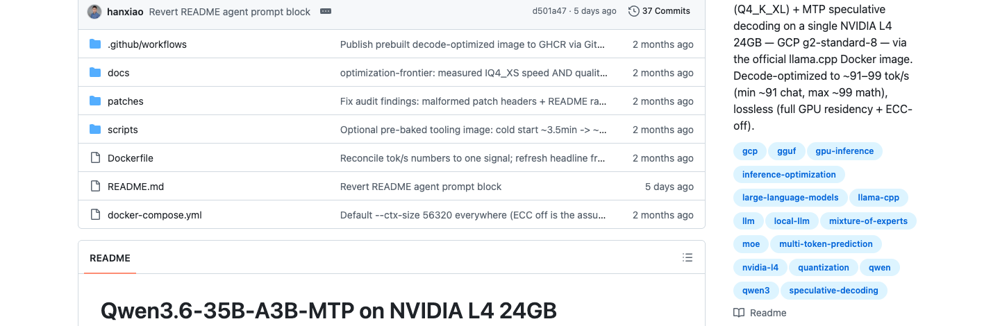
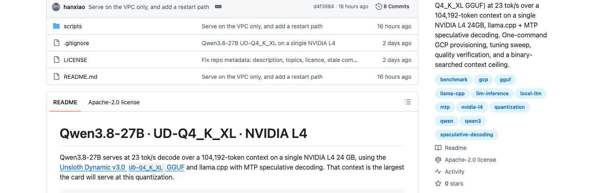
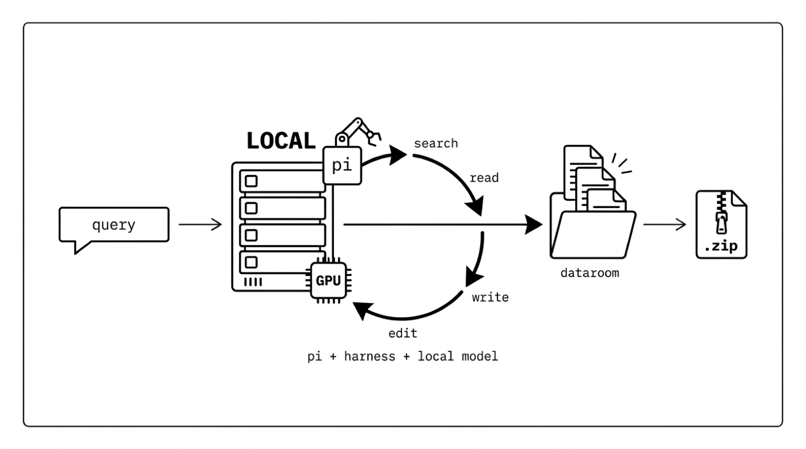
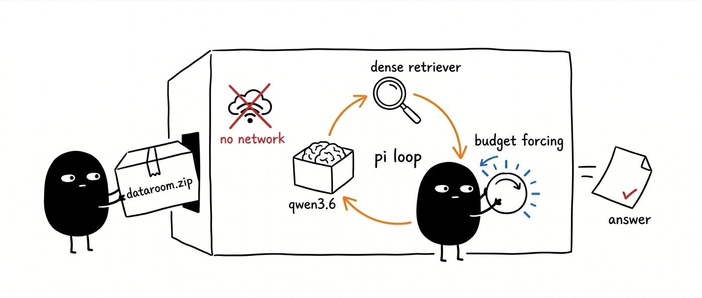

Qwen3.8 Agentic Search
Evaluation on Private Data
Qwen3.8 landed last week and my timeline has already decided it is better.
I have a default. For agentic search on my own hardware I reach for Qwen3.6-35B-A3B, and I have spent months tuning how it is served. A new model arrives, the hype arrives with it, and neither tells me whether to switch.
That framing matters. This is not a solo evaluation of a new model against a leaderboard. It is a replacement decision between two specific backends I have both already deployed, measured, and pushed to the wall of the same cheap GPU.
And I cannot answer it from a public benchmark, because the corpus I care about is mine.
Both already pushed to the measured wall of one L4.


Two systems, one to build the box and one to lock a model inside it.


A local model in a Pi harness loops search, read and write until it has built a comprehensive, fully cited dataroom on disk: a .zip you hand to the next model.


Locks a local Qwen in an airgapped loop with one .zip dataroom and no web, so it can only answer from what is in the box.
One builds the private corpus. The other guarantees the model cannot cheat its way around it.
Six years of my own papers, plus everything the website says.
| Group | Files | Detail |
|---|
Snapshot 2026-08-13. 218 files total.
Papers and blog posts overlap by design: each major model has both a paper and a release blog, with different framing. That overlap is what makes multi-hop questions possible at all.
Two snapshots, stated separately. The ten audited graphs in the next section were built over an earlier 207-file snapshot of this same corpus. The 218-file snapshot above is what the agentic harness indexes today.
Questions mined out of the corpus, not written by hand.
of the same material
grounded triples
of length 2 and 3
endpoint is the answer
A path of length k is a chain of k corpus-grounded facts, so path length is the difficulty knob. The question names the starting entity and hides the bridges, so a solver has to discover them rather than look one thing up.
Nobody vouches for a benchmark nobody wrote.
When a pipeline emits an evaluation set, acceptance rests on checks the pipeline can compute over its own artifact. The same three recur across systems:
A run that satisfies all three is reported as having produced a usable evaluation set. The one line of work that inspects acceptance closely, DoRA, abandons automation and sends items to three rounds of domain-expert review.
Before trusting a verifier to rank models, ask what licenses the claim that the verifier itself is any good.
One word, two properties.
Both are cheap. The substring check needs no model. The assertion audit needs one call of at most eight output tokens per edge, 2,811 calls for the largest graph, and all 18,615 edges of all ten graphs were audited at temperature 0 with no sampling.
Standard practice measures the first and reports it as the second.
The two axes invert at the extremes.
Its builder set each evidence span to the object string itself. Every edge passes the substring check while asserting nothing.
Its spans paraphrase rather than quote, while stating the facts they support. Accepting on substring groundedness keeps the first graph and rejects this one.
A question is worth having when memory cannot answer it and the corpus can.
Neither failure mode is visible to any artifact-level check. A graph's usability is the fraction of its sampled questions that are usable, and it is the quantity every acceptance metric has to be judged against.
Three conditions over one corpus.
Grading is string containment, falling back to an LLM equivalence judge. The ladder is applied identically to every graph and every question, with no graph-specific tuning, because it is the measuring instrument rather than a result.
The closed-book rung is the one that makes the set measure search instead of memory.
The most widely used check ranks the artifacts close to inversely.
| Acceptance metric | Pearson r | Spearman ρ |
|---|
Coverage, duplicate-freedom and edge count carry no usable information. Verbatim groundedness is the strongest correlate in the sample, with a negative sign: the three highest-provenance graphs are the three least usable.
The proposed substitutes are better behaved in sign and too weak to replace measurement. Capacity is dependable only at zero, where the one graph with no length-3 path yielded one usable question in forty.
n = 10 graphs. Ten points support ordinal statements, not precise coefficients.
A question set whose difficulty is a property of the corpus.
The same protocol reconstructs on any corpus. That is what makes it a verifier rather than a dataset: it is the procedure, applied to documents that never leave the building, and the 207-document corpus here is a shareable stand-in for the private one.
One agent, one external tool, no scaffold to credit.
never compacted
compacts its own context
chunks.jsonl
over the corpus
not a file
A per-run binding of Pi to an OpenAI-compatible /v1, one extension registering search_corpus, and two wall-clock rails. No skills, no tool catalog, no supervision of what the model does with its turn.
search_web and read_url exist and are off by default, per run. With web access off the extension is never loaded and the model never sees the two tools.
A hit is a starting point, not an answer.
{ score, path, lines, text }
// what the agent is told to do with it
read path around lines
widen the window while truncated
grep -n the same file for the topic
7777 x 768 matrix loaded in process: 117 ms to load, 4.3 ms per search.
The retrieval being tested is exactly one script, and everything else the agent does is stock file access. Nothing sits in between to credit or blame.
The instruction is load-bearing. The lines field alone was not enough: runs answered from the snippet without ever opening the file.
The extension is checked against the reference CLI on 15 query and filter combinations, including CJK: identical rankings, maximum score delta 1e-6.
Four times the throughput, or twice the window.
| Measured on one L4 | 3.6-35B-A3B | 3.8-27B |
|---|
Greedy, cache disabled, decode only. Measured 2026-08-14.
An agentic search loop spends its budget re-reading. Every round appends tool output and re-prefills a growing prefix, so the window bounds how many rounds fit before compaction starts discarding evidence, and decode speed bounds how long the whole thing takes.
The bandwidth arithmetic explains the floor, not the winner. 17.9 GB of weights at 300 GB/s bounds plain decode at about 16.8 tok/s on the 3.8; everything above that on either row is the MTP draft head, and speculative decoding is lossless by construction.
Which side of that trade wins on multi-hop retrieval is an empirical question, and it is the one this experiment asks.
Both ceilings are the card's, found by binary search and confirmed under load.
| 3.8 --ctx-size | VRAM used | Free |
|---|
24,570 MiB device. Weights are 17.9 GB at every setting.
A context counts as working only when the server both reaches /health and completes a generation. llama.cpp allocates the KV cache at load time while some compute buffers are sized on the first decode, so a context that loads can still fail under traffic.
The 35B-A3B ceiling is set the same way and lands at 56,320, first OOM at 57,344, also at ~98% VRAM. On both cards ECC off is the precondition that makes the top setting fit at all.
Two axes, held fixed everywhere else.
104,192 ctx
56,320 ctx
The corpus, the question set, the mining and verbalization stage, the retrieval index, the grading procedure, and the four-round cap. Only the served model changes across rows.
Per-graph samples are 40 questions, fewer where a graph is too sparse to fill the sample, so per-graph rates carry sampling error of several points.
Accuracy per turn, against two different budgets.
Turns are what a person reads; fresh-prefill input tokens are what the GPU pays. A model with a longer window can spend more tokens per turn, so the two axes can disagree about which model is more efficient, and both are reported.
The table exists. The cells do not.
| Model, agentic condition | Closed-book | Single-shot | Agentic | Turns to answer | Fresh-prefill tokens |
|---|
Nothing on this machine contains a Qwen3.8 accuracy on this verifier. The rows, the columns and the metric definitions are fixed in advance so that the numbers cannot be chosen after the fact; the cells stay empty until the run happens.
Three outcomes, three different conclusions.
The third outcome is the one worth stating out loud in advance, because it is a result about the verifier rather than about either model, and a result that only becomes visible if the per-turn curve is recorded rather than the final answer alone.
The instrument bounds the claim.
One further constraint is already measured and worth carrying: across all ten construction runs, no builder ever invoked the local embedding or reranking tools available in its loop. Provided capability that is not directed goes unused, which is a warning about how much of an agentic result belongs to the agent.